Relationship says how alike two individuals are, and with it a record also tells you about the individual’s parents, its sibs and its progeny. Block 10 reads the pedigree, computes inbreeding and the relationship matrix, predicts breeding values with the animal or the sire model, estimates the variance components by REML, predicts the genotypes of a trial with their relationships and, for crossbreeding, estimates Dickerson’s parameters and predicts crosses, rotations and composites.
Unlike the previous blocks, Block 10 nearly always works with data of its own: records of individuals with their sire and dam in cards 1 and 2, and means of breeds and their crosses in card 4. Only card 3 uses the trial loaded in Block 3, to which it adds the pedigree from card 1. It serves animals and plants alike: it accepts selfing, parents that are already pure lines and lines derived through several generations of selfing.
| Card | What it gives |
|---|---|
| 1 · Records and pedigree | Reading and checking of the pedigree, inbreeding, Mendelian sampling variance and relationship matrix A |
| 2 · Animal model: breeding values (BLUP) and components (REML) | Animal or sire model, with permanent environment, maternal effect and other random factors; breeding values with their reliability; genetic trend |
| 3 · BLUP of the trial genotypes (Block 3) with the pedigree | Prediction of the entries of a trial with independent genotypes, with their relationships, or with an additive and a non-additive part |
| 4 · Crossbreeding: Dickerson's parameters and prediction of systems | Direct and maternal breed effects, heterosis and recombination loss; prediction of crosses, rotations and composites |
| 5 · Assumptions, formulas and references | The models, their formulas and the references |
The thread of the chapter is a simulated sheep flock: 439 lambs born over three years, progeny of 60 rams and 320 ewes, weighed at weaning. It was simulated with σ²a = 30 and σ²e = 70 (h² = 0.30), a sex effect and a year effect, and each year’s replacements were drawn at random from the lambs, with no selection. The examples of Mrode (2014) and Schaeffer (2019) serve for the checks; plants come in with the pedigree of the 60 lines of the simulated trial of Block 3, and crossbreeding with a simulated three-breed experiment and four published examples.
Card 1 · Records and pedigree expects one row per record with the individual, its sire and its dam; an unknown parent is written 0 or NA, or left empty. Parents without a row of their own are added as founders: in the flock there are 170, the 20 rams and 150 ewes of the first year. Records (file) reads .xlsx, .xls, .xlsm, .ods, .csv, .tsv and .txt files; Separate pedigree (optional) adds a second file with ancestors that have no records, so that the relationships reach further back. Seven examples load ready-made data (Table 10.2).
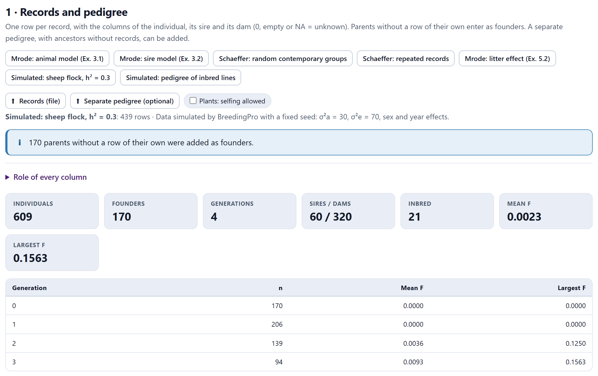
| Example | Data | Shows |
|---|---|---|
| Mrode: animal model (Ex. 3.1) | 5 calves with records, 8 individuals; σ²a = 20 and σ²e = 40 | The animal model |
| Mrode: sire model (Ex. 3.2) | The same data, σ²s = 5 and σ²e = 55 | The sire model |
| Schaeffer: random contemporary groups | 15 records, 29 individuals; fixed year, random contemporary group | Other random factors |
| Schaeffer: repeated records | 22 records of 12 individuals | The permanent environment |
| Mrode: litter effect (Ex. 5.2) | 10 piglets from three litters, 15 individuals | The litter as a random effect |
| Simulated: sheep flock, h² = 0.3 | 439 lambs, 609 individuals | REML and the thread of the chapter |
| Simulated: pedigree of inbred lines | 8 parents and 60 F6 lines | Selfing; card 3 |
The folded box Role of every column has a menu for each column with the roles of Table 10.3. The app proposes them from the name: Animal, ID, Individual or Genotype is the individual; Sire, Father or Bull, the sire; Dam or Mother, the dam; CG, Litter or Group, a random effect; a numeric column with few integer values, a fixed effect, and one with many values, the response trait. In plants, the seed parent goes in as the dam and the pollen parent as the sire.
| Role | What it is for |
|---|---|
| Individual | The identifier; it is repeated if the individual has several records |
| Sire (or parent 1) · Dam (or parent 2) | The parents |
| Response trait | The traits analyzed; card 2 picks one |
| Fixed effect (factor) | Sex, year, herd, season or type of birth |
| Covariate | Age at weighing or birth weight, with a linear regression |
| Random effect (factor) | Contemporary group or litter, with its own variance |
| Generations of selfing | The t generations of each line since the cross of its parents |
| Founder inbreeding | The F of a founder: 1 for a pure line |
| Birth year (trend) | Only for the genetic trend |
| Ignore | The column is left out |
The card checks the pedigree before using it and warns about each problem: an individual that appears twice with different parents (the first row is kept), an individual that is its own parent (that parent is deleted), a loop in which someone turns out to be its own ancestor, and the same individual as sire and as dam, which is normal in monoecious plants but not in animals. It then sorts the pedigree so that parents come before their progeny and gives a summary, the inbreeding by generation and, when the pedigree has up to 60 individuals, the relationship matrix A as a heat map.
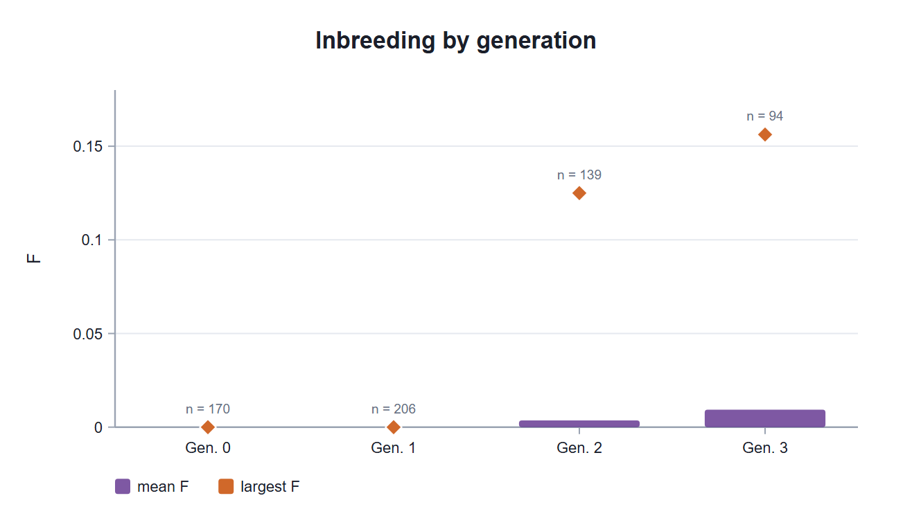
The folded box Individuals, inbreeding and Mendelian sampling lists each individual with its generation, its selfings, its F and its b, the Mendelian sampling variance relative to σ²a; an asterisk marks the added founders. Inbreeding comes from the path vectors of Meuwissen and Luo (1992), and the inverse A−1 is built directly with the rules of Henderson (1976) and Quaas (1976): for each individual, 1/b is added to its diagonal, −1/(2b) to the cells with its parents and 1/(4b) to the cell of the parents with each other. So the model never needs to invert A.
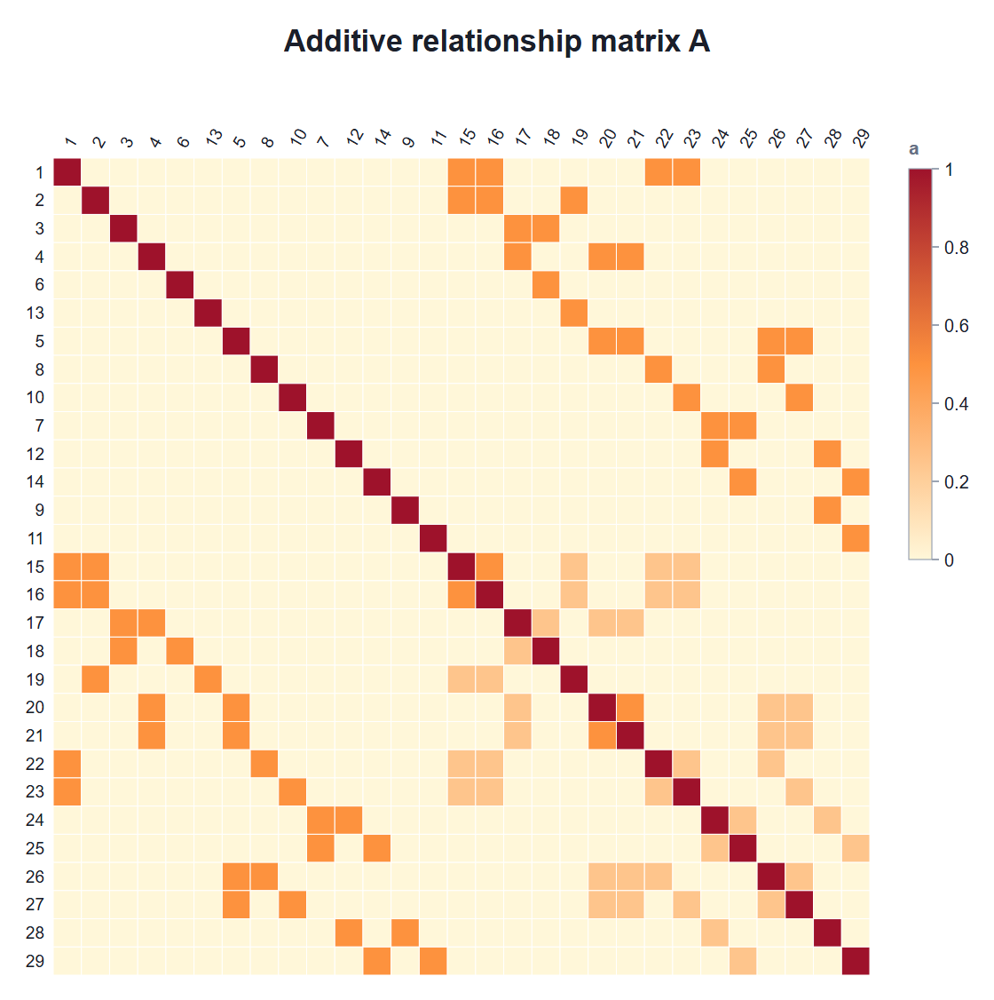
In plants you tick Plants: selfing allowed, and an individual with the same sire and dam is a self and not an error. The lines example brings the pedigree of the 68 entries of the simulated trial of Block 3: 8 parents that are pure lines (founder inbreeding = 1) and 60 lines, five from each of 12 single crosses, with five generations of selfing. A line with t selfings since the cross of its parents s and d keeps the relationships of its F1 with everyone else and has
With pure, unrelated parents, fsd = 0 and each F6 line has F = 1 − 1/32 = 0.9688; the mean F of the 68 entries is 0.9724 (Figure 10.4).
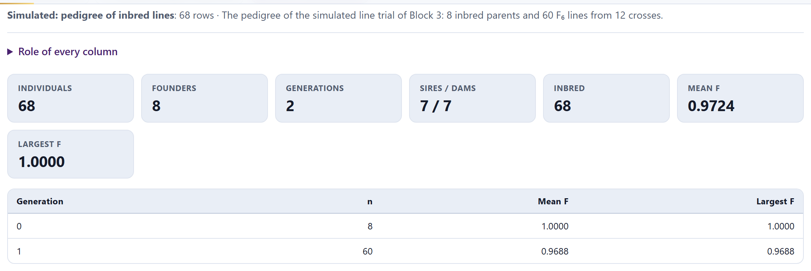
In Schaeffer’s seven-animal pedigree (2019, tables 2.9 to 2.14), the F values are 0, 0, 0, 0, 0.125, 0.25 and 0.28125, b7 = 0.40625, and A and A−1 match the published ones; in Mrode’s (2014, table 2.1), F5 = F6 = 0.125 and A·A−1 is the identity to within 10−12. For the 68 lines, the app’s A−1 is the inverse of the A computed separately by the tabular method, to within 1.8 × 10−15.
Card 2 · Animal model: breeding values (BLUP) and components (REML) has three menus: the Trait; the Model, animal (every individual) or sire, and the Variances, estimate them by REML or give them (known). Two checkboxes add the Permanent environment (repeated records) and the Maternal genetic effect. The line beneath says which fixed and random effects go in; they are changed in the role table of card 1. Fit the model solves.
The animal model gives a breeding value to every individual in the pedigree, whether or not it has records. The equations are solved exactly, with dense matrices, up to 2,600 unknowns; beyond that, the app says so and suggests trimming the pedigree to the ancestors of the individuals with records. The components are estimated by restricted maximum likelihood with average-information iterations (Gilmour, Thompson and Cullis, 1995), a few EM steps at the start and bounds at zero.
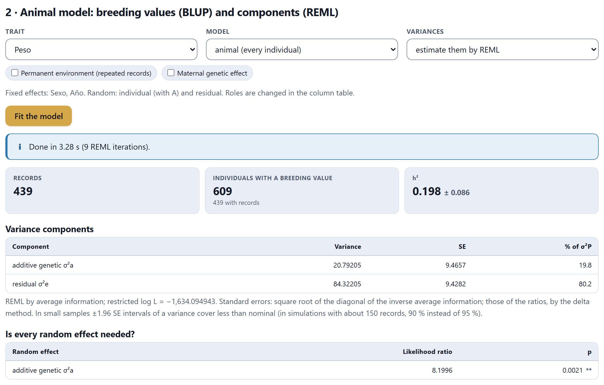
The estimated heritability, 0.198, lies 1.2 standard errors from the true one, 0.30: with 439 records of a single weighing, the additive variance is estimated with little precision. The note warns about it: in small samples, the ±1.96 standard-error interval of a variance covers less than it claims (in simulations with about 150 records, 90% instead of 95%). The table Is every random effect needed? compares the restricted likelihood with and without each effect; the ratio, 8.20, is compared with the ½χ²0 + ½χ²1 mixture of a variance on the boundary (Self and Liang, 1987) and gives p = 0.0021. That comparison holds only between models with the same fixed effects.
The folded box Fixed effects (least-squares means) gives the mean of each level with its standard error. In the flock, males weigh 31.49 ± 0.96 and females 30.03 ± 0.96; the years, 30.63, 30.16 and 31.48.
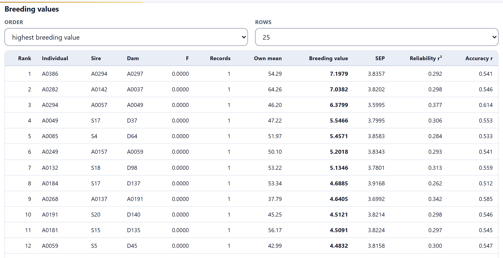
The breeding value is a deviation from the base of the pedigree, the founders, whose expected mean is 0. It combines the individual’s own record with those of all its relatives, in the proportion their relationship dictates. A0282 has the highest record in the table (64.26), yet comes second; A0294 is third with only 46.20 because it is the sire of the first, A0386, and has more progeny: its reliability, 0.377, is the highest of the 12 rows. The 170 founders without records also receive a breeding value, from their progeny alone: ram S4 is 16th (4.34, with reliability 0.389).
The formula of several textbooks, 1 − PEV/σ²a, overstates the reliability of inbred individuals; the app includes 1 + F. In the flock, reliabilities range from 0.05 to 0.47: with a heritability of 0.2, a single record says little. Because the flock is simulated, the note gives the correlation between the estimated and the true breeding value of the 609 individuals: 0.619.
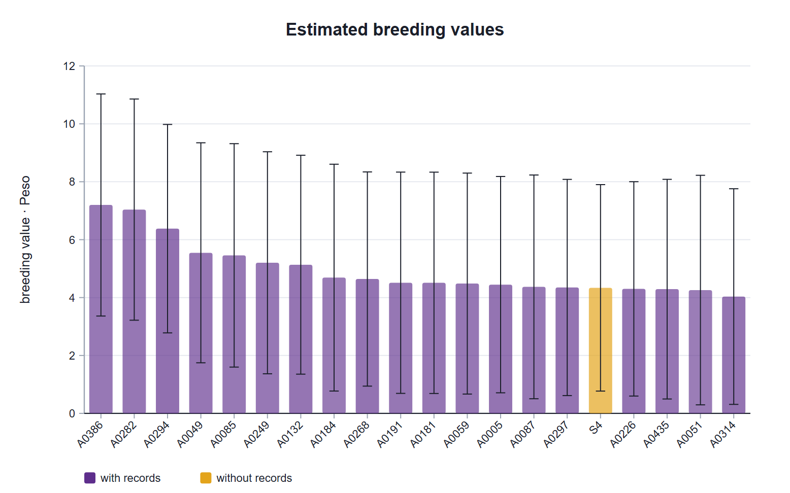
The whiskers of Figure 10.7 are wide: the SEP of almost 4 kg is as large as the differences among the top places. Even so, the breeding value is the best bet: it already discounts that uncertainty, and choosing those with the highest breeding values gives the greatest expected response even if the exact order of the first few is uncertain.
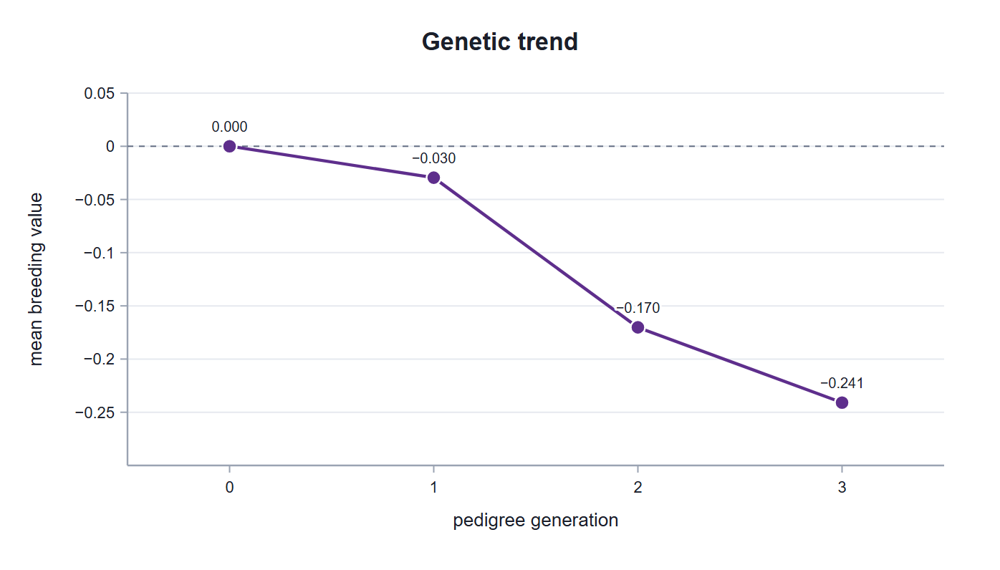
The Trend by menu groups by pedigree generation, by birth year or by any fixed or random factor. In a program with selection, the slope of that line is the genetic response achieved.
With Mrode’s example 3.1 (2014) and σ²a = 20, σ²e = 40, the sex effects are 4.3585 (males) and 3.4044 (females), and the breeding values of animals 1 to 8, 0.0984, −0.0188, −0.0411, −0.0087, −0.1857, 0.1769, −0.2495 and 0.1826, equal to the published ones to within 10−7; animal 1 has PEV 18.84 and reliability 0.058. The REML of the flock agrees with an independent maximization of the restricted likelihood (log L = −1634.0949).
The sire model. With Model: sire, the random effect is the transmitting ability of each sire, half its breeding value, with the relationships of the sires and their ancestors. Its variance is σ²s = ¼σ²a, so h² = 4σ²s/σ²P, and the column EBV (2 × TA) gives twice the transmitting ability so that it reads on the scale of the animal model. The records and mean columns become those of each sire’s progeny, and the records of individuals with no known sire do not contribute to the sire effect (the app counts them in a notice). It is a smaller model than the animal model, but it ignores the dams and assumes that their mates are a random sample.
Repeated records. The checkbox Permanent environment (repeated records) adds an effect of each individual, with no relationships, that is repeated in all its records: what an individual has of good or bad from its history and not from its genes. Repeatability is t = (σ²a + σ²pe)/σ²P. If no individual has more than one record, the effect is not estimable and the app leaves it out with a notice.
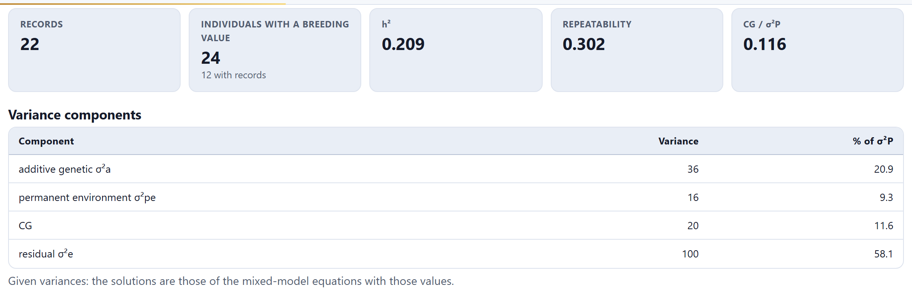
In that example, the breeding value table adds the column Permanent environment. Animal 21, with two records averaging 83.50, has the highest breeding value (6.86) and a permanent environment of 3.05: part of what it yields above average does not pass to its progeny.
The maternal effect. The checkbox Maternal genetic effect adds the maternal breeding value of each individual’s dam, also with A, with no covariance with the direct effect (Willham, 1963). The tiles give m² and the total heritability (σ²a + ½σ²m)/σ²P, and the table, the Maternal value of each individual. If the direct–maternal covariance exists, the total heritability is (σ²a + 1.5σam + 0.5σ²m)/σ²P (Willham, 1972), and the note warns about it.
Other random factors. Each column with the role Random effect (factor) enters with its own variance, independent of the others, and its tile gives the fraction of the phenotypic variance it explains: the contemporary group in Schaeffer’s examples and the litter in Mrode’s (σ²a = 20, litter 15 and σ²e = 65, with h² = 0.20 and litter 0.15). A random contemporary group pays off when there are many small groups: with the group fixed, in a group of two or three animals the group effect takes almost the whole record; with the group random, that effect shrinks toward zero and the record says more about the animal.
Given or estimated variances. With give them (known) a box appears for each variance; it is used when they come from a larger population or from the literature, and the solutions are those of Henderson’s equations with those values, without standard errors or tests. With few records, such as Mrode’s five calves, REML cannot estimate anything useful; with the flock it can.
Mrode’s sire model (2014, Ex. 3.2): sex 4.3357 and 3.3820, and transmitting abilities of sires 1, 3 and 4 equal to 0.0220, 0.0140 and −0.0430. Schaeffer (2019), table 3.1: years 94.82 and 87.14, contemporary groups ±2.0653 and ±3.6688, and breeding values of animals 25, 28 and 17 equal to 7.8180, 7.3074 and −6.4880. Tables 6.1 and 6.2: breeding values of animals 7, 11 and 21 equal to 1.3535, 3.2348 and 6.8624, with permanent environments of −0.0910, 2.5214 and 3.0512. Schaeffer prints reliabilities of 0.2442 and 0.1980 computed with rounded values; the exact ones are 0.24414 and 0.1986.
Card 3 · BLUP of the trial genotypes (Block 3) with the pedigree joins the trial loaded in Block 3 with the pedigree from card 1; the entries must carry the same name in both. The notice at the top counts how many do (here, all 68). Without a trial in Block 3, the card asks you to load one; if no name matches, it says so, and with the simulated lines trial it suggests loading their pedigree. That pedigree has no response trait, so card 2 warns that it serves only for card 3.
The Genetic effect menu has three models: independent genotypes (K = I), the usual BLUP; additive with the pedigree (K = A), in which relatives share information, and additive (A) + non-additive (I), with one part inherited through the pedigree and another specific to each genotype (Oakey and colleagues, 2006). Environments and replicates within environments are fixed and the genotype × environment interaction is random; with a single environment, only the replicates are fixed. The predicted value is the mean of the fixed effects plus the genotypic BLUP, and the heritability is the generalized one of Cullis, Smith and Coombes (2006).
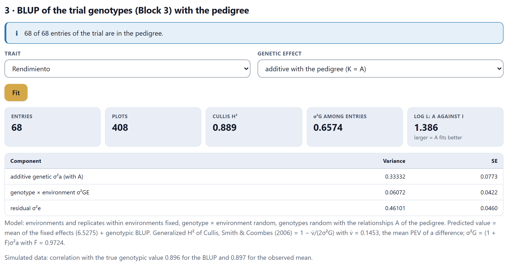
| Model | σ²a | σ²i or σ²G | σ²GE | Cullis H² | Correlation with the truth |
|---|---|---|---|---|---|
| K = I | — | σ²G = 0.386 | 0.060 | 0.799 | 0.897 |
| K = A | 0.333 | — | 0.061 | 0.889 | 0.896 |
| A + I | 0.091 | σ²i = 0.239 | 0.060 | 0.819 | 0.899 |
With K = A, the tile log L: A against I reads 1.386: the two models have the same parameters, so the higher log L says that the relationships fit better. The two σ²G are not comparable: with K = A it refers to the population of the founders, (1 + F)σ²a = 0.657; with K = I, to the 68 entries as they are, 0.386, which come from only 8 parents.
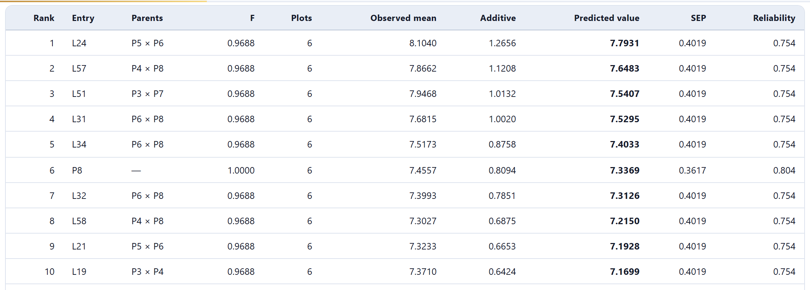
For each entry, the table gives its parents, its F, its plots, the observed mean, the additive part, the predicted value, the SEP and the reliability; with A + I it adds the non-additive part. Parent P8 is sixth with a reliability of 0.804, higher than that of the lines (0.754), because it has 15 descendant lines that tell about it.
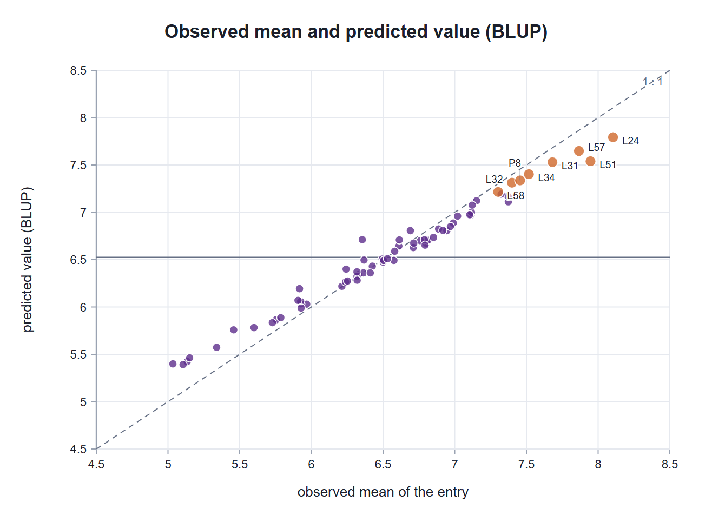
Here the trial is balanced and the heritability is high, so BLUP and the observed mean rank almost the same (correlations with the truth of 0.896 and 0.897). BLUP wins when plots are missing, when the entries have different numbers of replicates or when the heritability is low; the relationships win when there are families with few plots each.
With A + I, the test of the additive part is significant (χ² = 3.24, p = 0.036), but the split is not reliable: σ²a = 0.091 and σ²i = 0.239 for true values of 0.3 and 0.1. Separating the two parts takes many families with varied relationships; with 12 crosses they are confounded, and you should also look at the additive-only model, as the card’s note says.
Card 4 · Crossbreeding: Dickerson's parameters and prediction of systems works with group means. Each group is written as a cross, sire first: A, A×B, C×(A×B), (A×B)×(A×B). For prediction you can add rot(A,B) and rot(A,B,C), the two- and three-breed rotations at equilibrium averaged over the cycle, and comp(A,B,C), the composite with equal parts after random mating; comp(A:0.5,B:0.25,C:0.25) accepts other proportions.
It is Dickerson’s model (1969, 1973): gI and gM are the direct and maternal additive effects of each breed, HI and HM the heterosis of the individual and that of its dam, and RI the recombination loss, what is lost when the favorable gene combinations of each breed are broken up. The What to do menu has three options: estimate the parameters from group means, predict with known parameters, or predict from breed means and heterosis in percent. Five examples cover them (Table 10.5).
| Example | Data | What it does |
|---|---|---|
| Simulated: three breeds | 16 groups of 30 animals: purebreds, F1, backcrosses, F2 and three-breed crosses | Estimates all the parameters |
| Simulated: four-breed diallel | 4 purebreds and their 12 reciprocal F1 | Heterosis of each pair of breeds |
| Two-breed diallel (van der Werf) | The 4 means of a two-breed diallel | Exact fit |
| Boer × local goats (Tesema et al. 2023) | Published parameters | Predicts with parameters |
| Heterosis in percent (Buchanan & Northcutt) | Means of three breeds, heterosis of 4.7 and 4.2% | Predicts in percent |
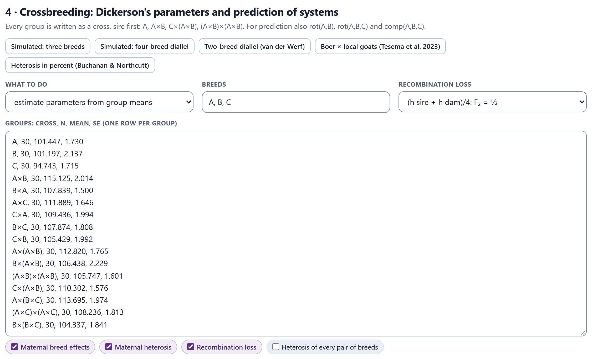
To estimate, each row of Groups carries the cross, n, the mean and its standard error. If all groups have a standard error, the weights are 1/SE² and there is a lack-of-fit test; if not, the weights are n, or equal if there is no n either. Breed effects are estimated with ΣgI = ΣgM = 0, as deviations from the average of the breeds. The checkboxes remove or add the maternal breed effects, maternal heterosis, recombination loss and the heterosis of each pair of breeds; a parameter that the groups cannot separate is marked as not estimable, and so are the predictions that depend on it.
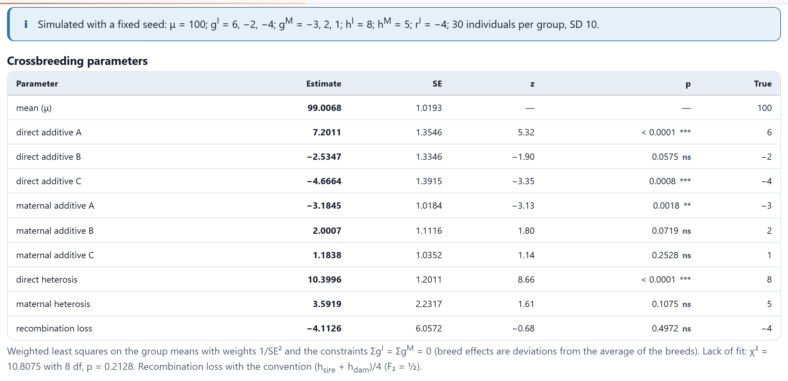
The direct and maternal effects come close to the true ones. Direct heterosis, 10.40 ± 1.20 against 8, falls just outside its 95% interval (8.05 to 12.75); in 1,000 simulated experiments those intervals cover between 93 and 95% of the time, as they should. The recombination loss, −4.11, has a standard error of 6.06: only the groups whose parents are already crosses separate it, and with 30 animals per group that is not enough. That is the usual situation in real experiments.
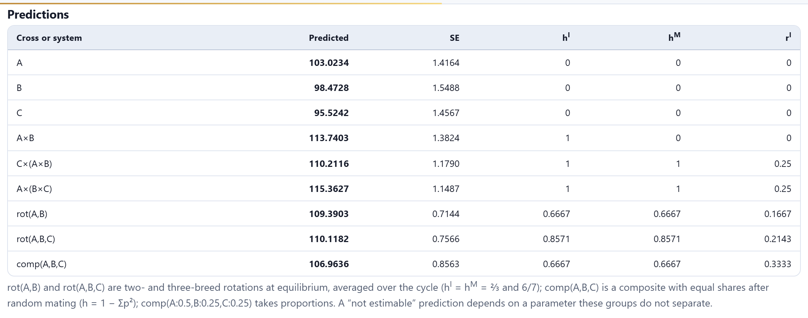
A×(B×C) combines the best direct effect, that of A, with a crossbred dam that brings maternal heterosis and the favorable maternal effects of B and C. The rotations retain ⅔ (two breeds) and 6/7 (three breeds) of the heterosis; the three-breed composite retains ⅔, but its recombination coefficient, ⅓, is larger than that of the rotations. The folded box Coefficients of every group gives the breed proportions of each group and of its dam with their coefficients, useful for checking that a cross was written as intended.
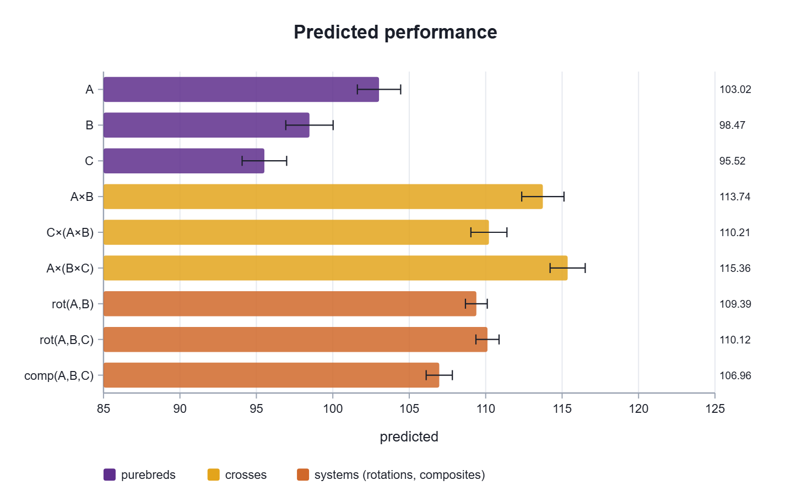
The breed diallel. With the checkbox Heterosis of every pair of breeds, each pair has its own direct heterosis, and if the groups form a diallel, the table Breed diallel: average, breed and specific heterosis splits it into average, breed and specific heterosis (Eisen and colleagues, 1983). In the simulated four-breed diallel, with true heterosis values of 4, 6, 2, 3, 5 and 4, the estimates are 4.15, 4.70, 2.83, 0.77, 5.37 and 2.85 (lack of fit p = 0.18).
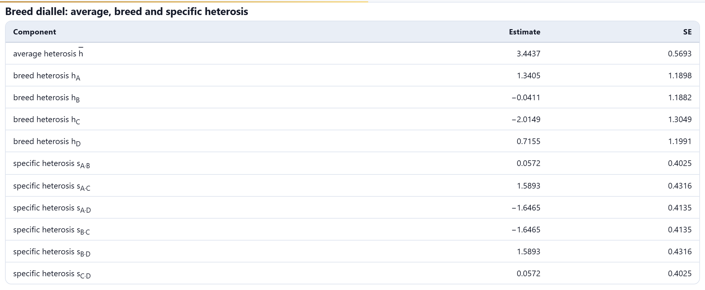
Known parameters. With predict with known parameters, the card asks for a list of parameters with their values (mu, gI:B, gM:B, hI, hM, rI) and predicts any cross; those not written are zero, so the breed with no effect written is the reference. The example of Tesema and colleagues (2023) uses their estimates for litter weaning weight in Boer × Central Highland goats: μ = 14.3 (the local breed), Boer gI = −3.18, heterosis −0.04 and recombination loss −6.20. The predictions are 12.67 for the F1, 10.35 for the backcross to Boer, 11.94 for the backcross to the local breed and 9.59 for the F2.
Heterosis in percent. The third option starts from the mean of each breed and the percentages of individual and maternal heterosis and of recombination loss, and predicts multiplicatively: average of the breeds × (1 + HIhI) × (1 + HMhM) × (1 − R·rI). This is how extension guides teach it.
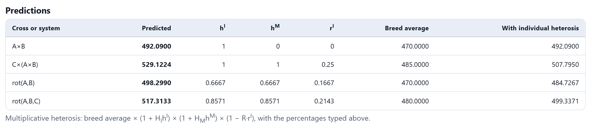
The Recombination loss menu has two conventions: (hsire + hdam)/4, in which the F2 has rI = ½ (Kinghorn, 1980; it is the one Tesema and colleagues use), and (hsire + hdam)/2, in which it has 1 (Dickerson, 1973). The predictions are the same with both; only the scale of the parameter changes, which is half as large with the second. When you take a published value, use the convention of the paper.
Van der Werf’s two-breed diallel gives gI1 − gI2 = 20, gM = ∓2.5 and direct heterosis 20, exactly. The predictions of Tesema and colleagues (2023, tables 3 and 4) are 14.30, 12.67, 10.35, 11.94 and 9.59, as published; those of Buchanan and Northcutt, 492.09 for A × B and 507.80 for C × (A × B) with individual heterosis only; with maternal heterosis, the paper gives 529.13 because it rounds the intermediate step, and the app, 529.12. The parameters of the three-breed experiment and of the four-breed diallel agree with an independent fit to within 3.6 × 10−13.
Card 5 · Assumptions, formulas and references summarizes the pedigree and the relationships, BLUP and REML, the models and crossbreeding, with their references. Results (.xlsx) downloads, each on its own sheet, the pedigree with F and b, the variance components, the breeding values, the means of each fixed factor, the BLUP of the trial entries, Dickerson’s parameters, the breed diallel decomposition and the predictions. Each figure has its download panel.
Continue takes you to Block 11 (genomics), where the relationships come from the markers instead of the pedigree. The back button returns to Block 9 (← G×E) when the Block 3 data have several environments, and to Block 8 (← Selection) when they do not.